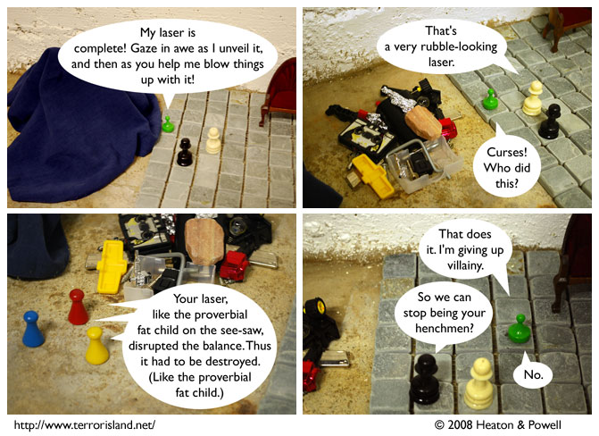

Strip #351
— Wednesday, September 10, 2008
The Green Grocer went back to his normal life as Mr. Limeton, and lived happily ever after.
Notes, Thoughts, &c.
Ben’s Notes
You remember the Green Grocer’s laser plans, I trust.
Lewis’s Notes
Ben’s rough draft for panel three was “blah blah blah balance.” I “jazzed it up” a bit.
I wrote Lewis’s comments today. -Ben